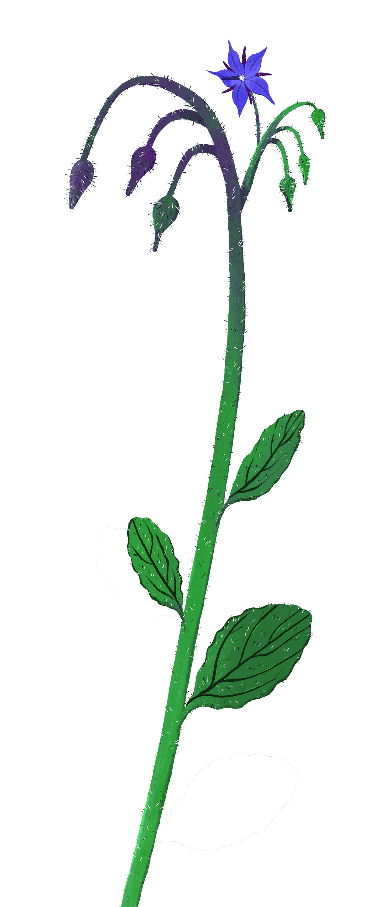
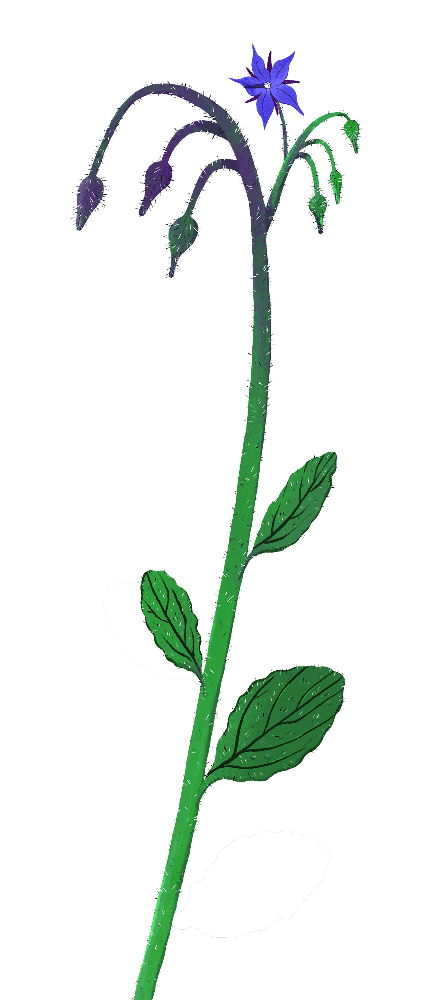

PARIETARIA
Parietaria officinalis
URTICACEAE
MORFOLOGIA
Pianta erbacea perenne alta fino 70 cm, dal fusto peloso e rossastro, con foglie anche esse pelose (non urticanti), picciolate, lanceolate, ovali, alterne e verde scuro. I fiori, anche essi verdi, sono minuscoli e raggruppati a palla. Il frutto secco ovale (achenio) ha al suo interno un solo seme.
HABITAT
È diffuso in tutta Europa e in giro per l’Italia cresce spontaneamente lungo i muretti a secco, nei prati, nei campi incolti e anche in città.
CUCINA
Con moderazione le giovani foglie, raccolte in primavera, si gustano in minestroni, zuppe, paste verdi, ripieni e omelette.

 
